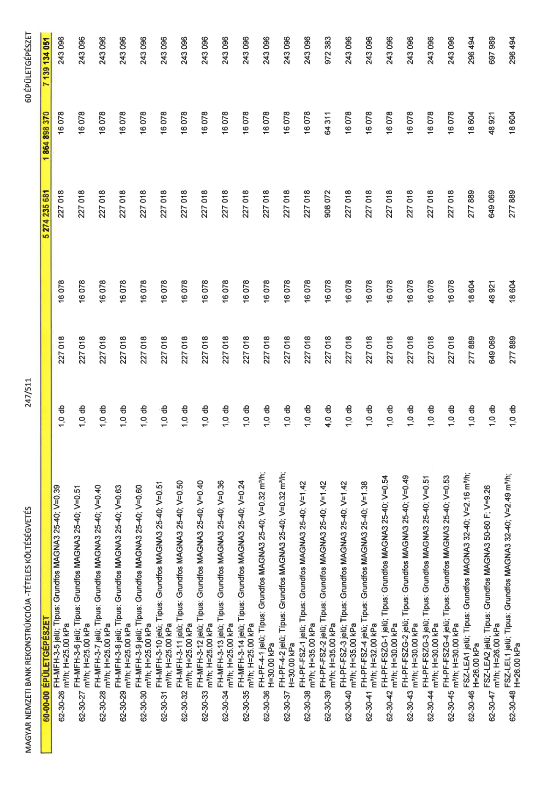

| Tétel | Menny. | Egys. | Anyag e.ár (net HUF) | Díj e.ár (net HUF) | Anyag összesen (net HUF) | Díj összesen (net HUF) | Anyag+Díj összesen (net HUF) |
|---|---|---|---|---|---|---|---|
| 62-30-26 FH-MFH-3-5 jelű; Típus: Grundfos MAGNA3 25-40; V=0.39 m3/h; H=25.00 kPa | 1,0 | db | 227 018 | 16 078 | 227 018 | 16 078 | 243 096 |
| 62-30-27 FH-MFH-3-6 jelű; Típus: Grundfos MAGNA3 25-40; V=0.51 m3/h; H=25.00 kPa | 1,0 | db | 227 018 | 16 078 | 227 018 | 16 078 | 243 096 |
| 62-30-28 FH-MFH-3-7 jelű; Típus: Grundfos MAGNA3 25-40; V=0.40 m3/h; H=25.00 kPa | 1,0 | db | 227 018 | 16 078 | 227 018 | 16 078 | 243 096 |
| 62-30-29 FH-MFH-3-8 jelű; Típus: Grundfos MAGNA3 25-40; V=0.63 m3/h; H=25.00 kPa | 1,0 | db | 227 018 | 16 078 | 227 018 | 16 078 | 243 096 |
| 62-30-30 FH-MFH-3-9 jelű; Típus: Grundfos MAGNA3 25-40; V=0.60 m3/h; H=25.00 kPa | 1,0 | db | 227 018 | 16 078 | 227 018 | 16 078 | 243 096 |
| 62-30-31 FH-MFH-3-10 jelű; Típus: Grundfos MAGNA3 25-40; V=0.51 m3/h; H=25.00 kPa | 1,0 | db | 227 018 | 16 078 | 227 018 | 16 078 | 243 096 |
| 62-30-32 FH-MFH-3-11 jelű; Típus: Grundfos MAGNA3 25-40; V=0.50 m3/h; H=25.00 kPa | 1,0 | db | 227 018 | 16 078 | 227 018 | 16 078 | 243 096 |
| 62-30-33 FH-MFH-3-12 jelű; Típus: Grundfos MAGNA3 25-40; V=0.40 m3/h; H=25.00 kPa | 1,0 | db | 227 018 | 16 078 | 227 018 | 16 078 | 243 096 |
| 62-30-34 FH-MFH-3-13 jelű; Típus: Grundfos MAGNA3 25-40; V=0.36 m3/h; H=25.00 kPa | 1,0 | db | 227 018 | 16 078 | 227 018 | 16 078 | 243 096 |
| 62-30-35 FH-MFH-3-14 jelű; Típus: Grundfos MAGNA3 25-40; V=0.24 m3/h; H=25.00 kPa | 1,0 | db | 227 018 | 16 078 | 227 018 | 16 078 | 243 096 |
| 62-30-36 FH-PF-4-1 jelű; Típus: Grundfos MAGNA3 25-40; V=0.32 m3/h; H=30.00 kPa | 1,0 | db | 227 018 | 16 078 | 227 018 | 16 078 | 243 096 |
| 62-30-37 FH-PF-4-2 jelű; Típus: Grundfos MAGNA3 25-40; V=0.32 m3/h; H=30.00 kPa | 1,0 | db | 227 018 | 16 078 | 227 018 | 16 078 | 243 096 |
| 62-30-38 FH-PF-FSZ-1 jelű; Típus: Grundfos MAGNA3 25-40; V=1.42 m3/h; H=35.00 kPa | 1,0 | db | 227 018 | 16 078 | 227 018 | 16 078 | 243 096 |
| 62-30-39 FH-PF-FSZ-2 jelű; Típus: Grundfos MAGNA3 25-40; V=1.42 m3/h; H=35.00 kPa | 1,0 | db | 227 018 | 16 078 | 227 018 | 16 078 | 243 096 |
| 62-30-40 FH-PF-FSZ-3 jelű; Típus: Grundfos MAGNA3 25-40; V=1.42 m3/h; H=35.00 kPa | 4,0 | db | 227 018 | 16 078 | 908 072 | 64 311 | 972 383 |
| 62-30-41 FH-PF-FSZ-4 jelű; Típus: Grundfos MAGNA3 25-40; V=1.38 m3/h; H=32.00 kPa | 1,0 | db | 227 018 | 16 078 | 227 018 | 16 078 | 243 096 |
| 62-30-42 FH-PF-FSZG-1 jelű; Típus: Grundfos MAGNA3 25-40; V=0.54 m3/h; H=30.00 kPa | 1,0 | db | 227 018 | 16 078 | 227 018 | 16 078 | 243 096 |
| 62-30-43 FH-PF-FSZG-2 jelű; Típus: Grundfos MAGNA3 25-40; V=0.49 m3/h; H=30.00 kPa | 1,0 | db | 227 018 | 16 078 | 227 018 | 16 078 | 243 096 |
| 62-30-44 FH-PF-FSZG-3 jelű; Típus: Grundfos MAGNA3 25-40; V=0.51 m3/h; H=30.00 kPa | 1,0 | db | 227 018 | 16 078 | 227 018 | 16 078 | 243 096 |
| 62-30-45 FH-PF-FSZG-4 jelű; Típus: Grundfos MAGNA3 25-40; V=0.53 m3/h; H=30.00 kPa | 1,0 | db | 227 018 | 16 078 | 227 018 | 16 078 | 243 096 |
| 62-30-46 FSZ-LEA1 jelű; Típus: Grundfos MAGNA3 32-40; V=2.16 m3/h; H=26.00 kPa | 1,0 | db | 277 889 | 18 604 | 277 889 | 18 604 | 296 494 |
| 62-30-47 FSZ-LEA2 jelű; Típus: Grundfos MAGNA3 50-60 F; V=9.26 m3/h; H=26.00 kPa | 1,0 | db | 649 069 | 48 921 | 649 069 | 48 921 | 697 989 |
| 62-30-48 FSZ-LEL1 jelű; Típus: Grundfos MAGNA3 32-40; V=2.49 m3/h; H=26.00 kPa | 1,0 | db | 277 889 | 18 604 | 277 889 | 18 604 | 296 494 |
